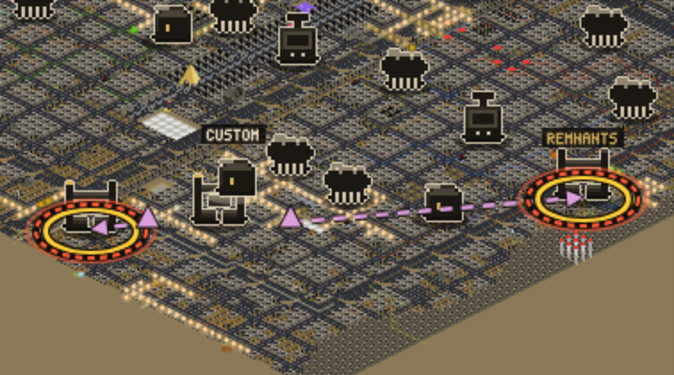
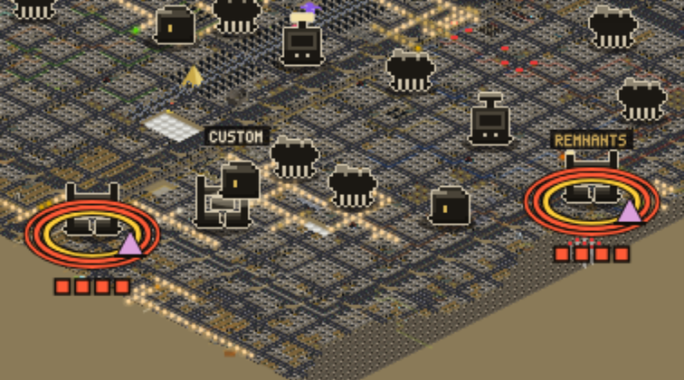
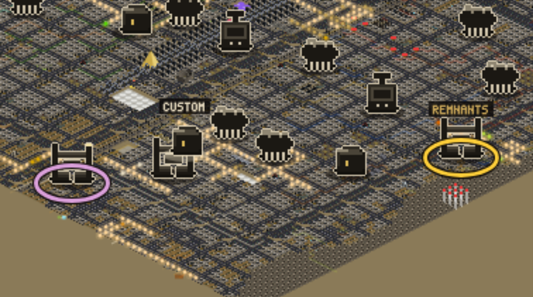

1. THE WARNING

Two Cartel crews are walking at two bases you hold. The gold ring is a base that is yours. The red
dashed ring says a crew is coming. The pink triangles are the crews, and the dashed line is where each one is going.
GOLD RING = yoursRED DASHED RING = a crew is comingPINK TRIANGLE = a Cartel crew
2. AT THE GATE

A crew has arrived at each one, and the clock starts. The solid red rings and the pink camp say a crew
is at the gate. Four red squares are four days left.
3. FOUR DAYS LATER, NOBODY CAME

The base on the right holds. The base on the left fell. The Remnants are stronger than the Cartel
crew (14 against 12), so that base stays yours and the gold ring stays. The Caravans are weaker (10 against 12), so the
Cartel took that base and its ring turns pink. Nothing was burned.
I CHANGED MY MIND ON ONE THING, AND THIS IS THE THUMB. Last time I said a base only falls from what you do.
Your own words point the other way: a base can be "taken or ruined," and losing one is how your base shrinks. The
research on sieges says the same thing: the world should be able to take a base nobody came to, but only after a long
warning with days on the clock. So the new default is four days, then the world answers.
Thumbs up keeps it. Thumbs down puts it back the old way: a crew at your gate does nothing until you fight.
WHAT THIS IS NOT. The fight is not built here. When you do come, the fight will decide, and the offer to come is
the settlement screen's. Nothing in the live game starts a raid yet, so these rings are NOT IN A TAB YET on the live
map. The pictures are the game's real map with the list drawn on top. The four days, the once an act and the
stronger-wins rule are my starting numbers for the numbers chat to tune.